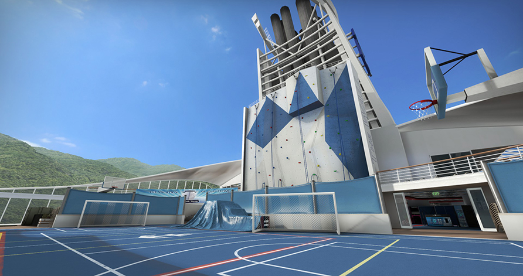

Hostage rescue maps in opperation Wildfire
Cruise
Cruise (cs_cruise) is a custom hostage rescue map featured in Counter-Strike: Global Offensive's Operation Wildfire. On the October 13, 2016 Update, the map was removed from the game files, making Cruise inaccessible via console. Combat takes place on the upper sections of a cruise liner. The cruise ship seems to be modeled after Royal Caribbean's Liberty of The Sea.